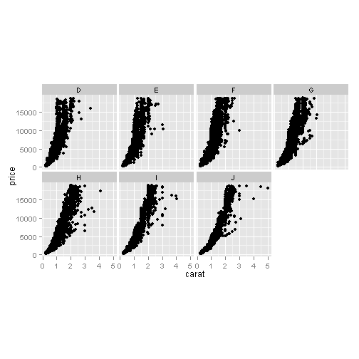
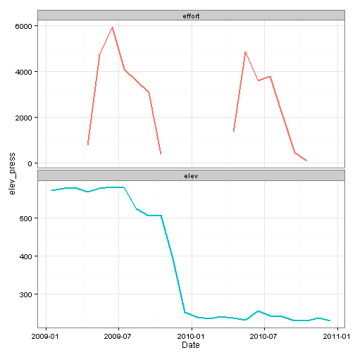
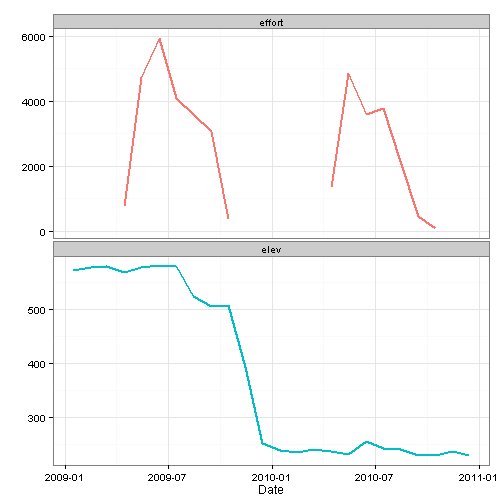
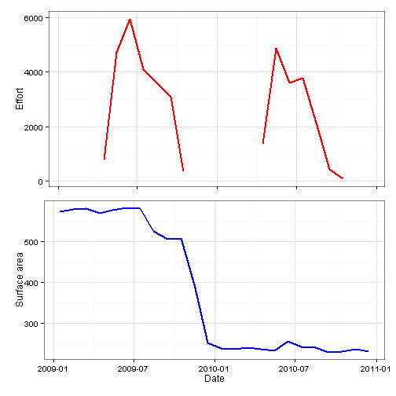
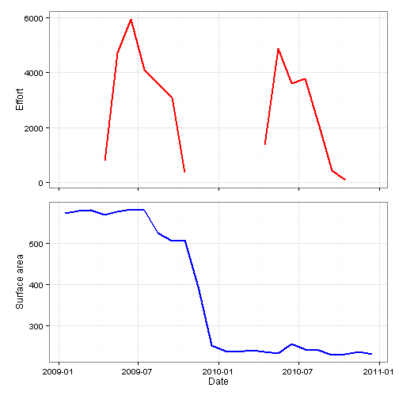

Multiple plots in ggplot2
The RMarkdown source to this file can be found here
As I have mentioned previously is that I use ggplots a ton in my work. It is my goto for plotting in R and I have really loved the ease of plotting with this package. One thing that can see kind of tricky is plotting multiple panels in a single figure. There are a couple of different ways to do this using ggplot2 and the gridExtra packages.
ggplot2 and facet_wrap
Within ggplot2 there is facet_wrap which will allow you to create multiple panels by a variable with a single line of code.
As an example:
library(ggplot2)
ggplot(diamonds, ) + geom_point(aes(x = carat, y = price)) + facet_wrap(~color,
ncol = 4) + theme(aspect.ratio = 1)
The facet_wrap command allows you to wrap panels by a single variable using the ~x command, where x is your by variable. You can specify the number of columns via ncol. One thing thing to notice that the x and y axis are equal among the facets. You can allow these to be vary among the different facets using scales command. You can set it to scales = 'free_x to allow the x-axis to be variable but constant y, scales = 'free_y to allow the y-axis to be variable but constant x, and scales = 'free for both to vary.
Now this works pretty well when you have a dataset up already like this, but what if you have data from two different datasets?
Lets load some data used to generate plot of angling effort and the surface area of a reservoir.
# load(url('https://github.com/chrischizinski/chrischizinski.github.com/raw/master/datasets/press_elev.RData'))
# You can not load this through knitr, which is why this is commented out
head(elev)## Year Month Day Elev ElevSI Date Area Area_ha type elev_press
## 745 2005 1 1 NA NA 2005-01-01 NA NA elev NA
## 746 2005 1 2 NA NA 2005-01-02 NA NA elev NA
## 747 2005 1 3 NA NA 2005-01-03 NA NA elev NA
## 748 2005 1 4 NA NA 2005-01-04 NA NA elev NA
## 749 2005 1 5 NA NA 2005-01-05 NA NA elev NA
## 750 2005 1 6 NA NA 2005-01-06 NA NA elev NA
head(monthly_pressure)## Date Month Year mmon.all mmon.bnk semon.all semon.bnk type
## 1 2007-01-15 Jan 2007 NA NA NA NA NA
## 2 2007-02-15 Feb 2007 NA NA NA NA NA
## 3 2007-03-15 Mar 2007 NA NA NA NA NA
## 4 2007-10-15 Oct 2007 408.8 42.17 168 36.25 408.8
## 5 2007-11-15 Nov 2007 NA NA NA NA NA
## 6 2007-12-15 Dec 2007 NA NA NA NA NAFor you to be able to use ggplot you will need to get the data into a single dataset and as you can tell from above that the column headers do no align (except for date). To get this into single dataset to be used in ggplot takes a couple of steps.
elev.2$type <- "elev"
monthly_pressure.2$type <- "effort"
elev.2$elev_press <- elev.2$Area_ha # we will need to have the variable to plot (our y) in a single column
monthly_pressure.2$elev_press <- monthly_pressure.2$mmon.all
library(plyr)
combined.data <- rbind.fill(elev.2, monthly_pressure.2)
head(combined.data)## Year Month Day Elev ElevSI Date Area Area_ha type elev_press
## 1 2009 1 15 2575 785.0 2009-01-15 1414 572.2 elev 572.2
## 2 2009 2 15 2576 785.1 2009-02-15 1430 578.7 elev 578.7
## 3 2009 3 15 2576 785.1 2009-03-15 1433 579.9 elev 579.9
## 4 2009 4 15 2576 785.2 2009-04-15 1406 569.0 elev 569.0
## 5 2009 5 15 2577 785.4 2009-05-15 1426 577.1 elev 577.1
## 6 2009 6 15 2577 785.5 2009-06-15 1437 581.5 elev 581.5
## mmon.all mmon.bnk semon.all semon.bnk
## 1 NA NA NA NA
## 2 NA NA NA NA
## 3 NA NA NA NA
## 4 NA NA NA NA
## 5 NA NA NA NA
## 6 NA NA NA NAtail(combined.data)## Year Month Day Elev ElevSI Date Area Area_ha type elev_press
## 43 2010 Apr NA NA NA 2010-04-15 NA NA effort 1348
## 44 2010 May NA NA NA 2010-05-15 NA NA effort 4874
## 45 2010 Jun NA NA NA 2010-06-15 NA NA effort 3606
## 46 2010 Jul NA NA NA 2010-07-15 NA NA effort 3794
## 47 2010 Aug NA NA NA 2010-08-15 NA NA effort 2136
## 48 2010 Sep NA NA NA 2010-09-15 NA NA effort 442
## mmon.all mmon.bnk semon.all semon.bnk
## 43 1348 1200.3 430.1 355.49
## 44 4874 3040.3 1105.5 415.82
## 45 3606 1476.0 1350.5 593.52
## 46 3794 903.8 619.8 254.15
## 47 2136 1449.7 1033.4 1062.06
## 48 442 149.5 136.3 88.41and lets plot the data using ggplot
ggplot(data = combined.data) + geom_line(aes(x = Date, y = elev_press, group = type,
colour = type), size = 1) + facet_wrap(~type, ncol = 1, scales = "free_y") +
theme_bw() + theme(legend.position = "none")## Warning: Removed 5 rows containing missing values (geom_path).
As you might be able to tell from the above figure, there is a problem with the above figure as the y-axis label is not appropriate and probably should not be included. The option in this case is to remove it and add it in with another program.
ggplot(data = combined.data) + geom_line(aes(x = Date, y = elev_press, group = type,
colour = type), size = 1) + facet_wrap(~type, ncol = 1, scales = "free_y") +
labs(y = "") + theme_bw() + theme(legend.position = "none")## Warning: Removed 5 rows containing missing values (geom_path).
Another issue with this figure is that tehre are no ticks in the upper figure of effort. You could do do scales = 'free' but this would add in all the dates again along the x-axis. The other option is to use create to seperate ggplot objects and align them with grid.arrange in the gridExtra package.
grid.arrange
library(gridExtra)
effort.plot <- ggplot(data = monthly_pressure.2) + geom_line(aes(x = Date, y = mmon.all),
colour = "red", size = 1) + labs(y = "Effort") + theme_bw() + theme(axis.text.x = element_blank(),
axis.title.x = element_blank(), panel.margin = unit(0, "lines"), plot.margin = unit(c(1,
1, 0, 1), "lines")) # set the plot margins to pull figures in closer. order is clockwise starting with top
elev.plot <- ggplot(data = elev.2) + geom_line(aes(x = Date, y = Area_ha), colour = "blue",
size = 1) + labs(y = "Surface area") + theme_bw() + theme(panel.margin = unit(0,
"lines"), plot.margin = unit(c(0.25, 1, 1, 1), "lines"))
grid.arrange(effort.plot, elev.plot)## Warning: Removed 5 rows containing missing values (geom_path).
Now as you can see in the above figure that this is much closer to what I would normally like in a figure, except that because effort and surface area have a differing number of digits, the figures do not fully align.
You can work around this using the gtable package.
library(gtable)
# Get the widths
gA <- ggplot_gtable(ggplot_build(effort.plot)) # effort plot## Warning: Removed 5 rows containing missing values (geom_path).gB <- ggplot_gtable(ggplot_build(elev.plot)) # elev plot
maxWidth = unit.pmax(gA$widths[2:3], gB$widths[2:3]) # find the maximum widths among the plots.
maxWidth## [1] max(1grobwidth+0.5lines, 1grobwidth+0.5lines)
## [2] max(sum(1grobwidth, 0.15cm+0.1cm), sum(1grobwidth, 0.15cm+0.1cm))
# Set the widths with the maximum width
gA$widths[2:3] <- maxWidth
gB$widths[2:3] <- maxWidth
# Arrange the four charts
grid.arrange(gA, gB, ncol = 1)
The above figure then no longer needs another program to add the axis labels and the top facet has tick marks.